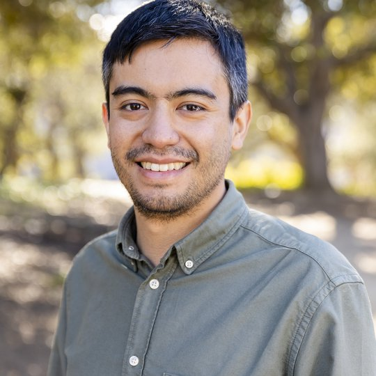
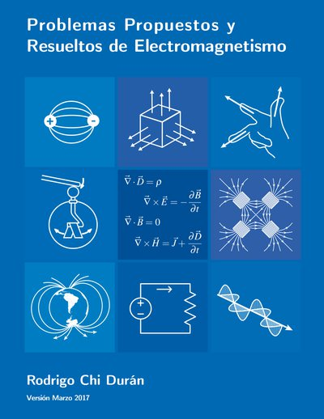

Rodrigo Chi Durán
Seismo-Acoustic Officer · CTBTO · Vienna, Austria
Hello, I’m Rodrigo Chi Durán (徐慶賢/徐庆贤). I am a Seismo-Acoustic Officer at the Comprehensive Nuclear-Test-Ban Treaty Organization (CTBTO) in Vienna, Austria, where I work on the seismic monitoring behind the verification of the Treaty. My work there focuses on improving event characterization methods and supporting the data analysis process. I hold a Ph.D. in Earth and Planetary Science from UC Berkeley, which continued a path that began in Electrical Engineering at the Universidad de Chile. My research revolves around seismology, in particular the seismic sources of earthquakes, explosions, and collapses, as well as complex sources related to forensic seismology. I also have previous experience working on Earth’s core dynamics and core waves, using signal processing and data-driven techniques to study them and model the outer core. I’m always happy to discuss research and potential collaborations.
Background
Interests
- Seismic Sources
- Explosion Monitoring
- Earthquakes
- Geomagnetism
- Geodynamics
- Data Science
Education
- 2023Ph.D. in Earth and Planetary ScienceDept. of Earth and Planetary Science, UC Berkeley
- 2015BSc. in Electrical EngineeringFacultad de Ciencias Físicas y Matemáticas, Universidad de Chile
Research
Three lines of work, one toolbox.
Seismic sources
A seismic recording reveals when waves arrive. These arrivals help us locate an event and understand its source.
Detecting, locating and characterizing seismic sources, with a focus on explosions. At the CTBTO I work with the seismic data used to verify the Comprehensive Nuclear-Test-Ban Treaty. In research, I combine regional waveforms, first-motion polarities and InSAR surface displacement in a single moment tensor inversion, applied to the declared North Korean nuclear tests.
Vertical component at IC.MDJ (Mudanjiang, China), about 370 km from the 3 September 2017 DPRK test. Bandpass 0.8–6 Hz, amplitude compressed for display. P picked automatically with STA/LTA at +50.1 s. Data: EarthScope / IRIS.
Publications
-
Joint Inversion of Regional Waveform, First-Motion Polarity, and Synthetic Aperture Radar Surface Displacement for the Fourth and Sixth North Korean Declared Nuclear Explosions
Extends our joint seismic and InSAR inversion to the 2016 and 2017 declared North Korean nuclear tests. A layered velocity model with topography improves the location, depth, and seismic moment used to estimate yield.
This study analyzed the Democratic People’s Republic of Korea’s (DPRK) fourth (DPRK4, 6 January 2016 Mw 4.49) and sixth (DPRK6, 7 September 2017 Mw 5.2) declared nuclear tests, employing a joint seismic and Interferometric Synthetic Aperture Radar (InSAR) inversion to improve understanding of these events and enhance moment tensor (MT) inversion capabilities. The recent efforts have focused on employing seismic waveform and InSAR geodetic deformation data separately to analyze these and the previous nuclear tests (e.g., Chiang et al., 2018; Myers et al., 2018; Wang et al., 2018). Building upon our previous work (Chi-Durán et al., 2021), we performed a joint regional waveform, first-motion (FM) polarity, and surface displacement inversion, which demonstrated improved source-type discrimination, a revised MT solution with reduced scalar moment uncertainty, and an independently constrained location. In this article, we build on the previous results for DPRK6 by including an analysis using a four-layered velocity model with free-surface topography to compute the near-source static deformation Green’s functions. The model consists of a 50 m basalt layer (VP=2.07 km/s, VS=1.2 km/s), a 250 m stratified volcanic deposit layer (VP=1.73 km/s, VS=1.0 km/s), a 700 m weathered granodiorite layer (VP=2.5 km/s, VS=1.3 km/s), and a granodiorite half-space (VP=5.35 km/s, VS=3.09 km/s). The half-space shares the velocity of the regional MDJ2 velocity model (Ford et al., 2010), which has proven effective for waveform inversion in the region. This model considers the range of reported values for various lithologies and weathering effects. Our findings show that using the layered velocity model enhances the recovery of source location and depth for both the explosions by improving fits and reducing uncertainties. The joint inversion also improves source-type discrimination and better constrains the scalar seismic moment necessary for downstream yield estimation.@article{ChiDuran2024Joint, title = {Joint Inversion of Regional Waveform, First-Motion Polarity, and Synthetic Aperture Radar Surface Displacement for the Fourth and Sixth North Korean Declared Nuclear Explosions}, author = {Rodrigo Chi-Durán and Douglas S. Dreger and Arthur J. Rodgers}, journal = {Bulletin of the Seismological Society of America}, volume = {114}, year = {2024}, doi = {10.1785/0120230237} } -
Extracting Spatial–Temporal Coherent Patterns in Geomagnetic Secular Variation Using Dynamic Mode Decomposition
Dynamic mode decomposition of the CHAOS-7 field model at high latitudes finds two waves, with periods of about 19 and 58 years. The 60-year wave matches predictions for zonal waves in a stratified layer at the top of the core.
Rapid growth of magnetic‐field observations through SWARM and other satellite missions motivate new approaches to analyze it. Dynamic mode decomposition (DMD) is a method to recover spatially coherent motion with a periodic time dependence. We use this method to simultaneously analyze the geomagnetic radial field and its secular variation from CHAOS‐7 at high latitudes. A total of five modes are permitted by noise levels in the observations. One mode represents a slowly evolving background state, whereas the other four modes describe a pair of waves; each wave is comprised of a complex DMD mode and its complex conjugate. The waves have periods of T 1 = 19.1 and T 2 = 58.4 years and quality factors of Q 1 = 11.0 and Q 2 = 4.6, respectively. A 60‐year wave is consistent with previous predictions for zonal waves in a stratified fluid. The 20‐year wave is also consistent with previous reports at high latitudes, although its nature is less clear.@article{ChiDuran2023Extracting, title = {Extracting Spatial–Temporal Coherent Patterns in Geomagnetic Secular Variation Using Dynamic Mode Decomposition}, author = {Rodrigo Chi-Durán and Bruce Buffett}, journal = {Geophysical Research Letters}, volume = {50}, year = {2023}, doi = {10.1029/2022GL101288} } -
Signatures of High-Latitude Waves in Observations of Geomagnetic Acceleration
Westward-moving patches of geomagnetic acceleration at high latitudes are best explained by zonal MAC waves. That explanation requires a stratified layer more than 100 km thick at the top of the core.
Models for the second time‐derivative of the geomagnetic field reveal prominent activity at high latitudes. Alternating patches of positive and negative geomagnetic acceleration propagate to the west at speeds that exceed nominal fluid velocities in the core. We show that waves are a viable interpretation of these observations. Magnetic Rossby waves produce a high‐latitude response with suitable phase velocities. However, the spatial complexity of the prediction is not compatible with the observations. Our preferred interpretation involves zonal MAC waves. These waves can account for the observed geomagnetic field when a stratified layer exists at the top of the core. The required layer has a thickness in excess of 100 km and a buoyancy frequency comparable to the rotation frequency. We anticipate a gradual reduction in the phase velocity over time, leading to a future change in the propagation direction.@article{ChiDuran2021Signatures, title = {Signatures of High-Latitude Waves in Observations of Geomagnetic Acceleration}, author = {Rodrigo Chi-Durán and Margaret S. Avery and Bruce A. Buffett}, journal = {Geophysical Research Letters}, volume = {48}, year = {2021}, doi = {10.1029/2021GL094692} } -
Joint Regional Waveform, First-Motion Polarity, and Surface Displacement Moment Tensor Inversion of the 3 September 2017 North Korean Nuclear Test
A moment tensor inversion that combines regional waveforms, first-motion polarities, and SAR surface displacement for the 2017 North Korean test. It fits all three data sets and narrows the range of possible source types.
The 3 September 2017 Mw 5.2 North Korean underground nuclear test (DPRK2017) is the largest man-made explosion with surface displacements observed by Synthetic Aperture Radar (SAR) and showed as much as 3.5 m of horizontal permanent deformation. Although regional distance waveform-based seismic moment tensor (MT) inversion methods successfully identify this event as an explosion, the inverted solutions do not fit the SAR displacement field well. To better constrain the source, we developed an MT source-type inversion method that incorporates surface ground deformation (accounting for free-surface topography), regional seismic waveforms, and first-motion polarities. We applied the source-type inversion over a grid of possible source locations to find the best-fitting location, depth, and point-source MT for the event. Our best-fitting MT solution achieves ∼70% horizontal geodetic fit, ∼80% waveform fit, and 100% fit in the first-motion polarities. The joint inversion narrows the range of acceptable source types improving discrimination, and reduces the uncertainty in scalar moment and estimated yield. The method is transportable and can be applied to other types of events that may have measurable geodetic signals such as underground mine collapses and volcanic events.@article{ChiDuran2021Joint, title = {Joint Regional Waveform, First-Motion Polarity, and Surface Displacement Moment Tensor Inversion of the 3 September 2017 North Korean Nuclear Test}, author = {Rodrigo Chi-Durán and Douglas S. Dreger and Arthur J. Rodgers and Avinash Nayak}, journal = {The Seismic Record}, volume = {1}, year = {2021}, doi = {10.1785/0320210022} } -
Decomposition of Geomagnetic Secular Acceleration Into Traveling Waves Using Complex Empirical Orthogonal Functions
Complex empirical orthogonal functions split the secular acceleration in CHAOS-6 into traveling waves with periods of 7 to 20 years. The waves help constrain the stratification at the top of the core.
Satellite observations reveal short pulses in the second time derivative of the geomagnetic field. We seek to interpret these signals using complex empirical orthogonal functions (CEOFs). This methodology decomposes the signal into traveling waves, permitting estimates for the period, angular wave number, and phase velocity. We recover CEOFs from the CHAOS‐6 model, focusing on three geographic regions with strong secular acceleration. Two regions are confined to the equator, while the third is located under Alaska. We find evidence for both eastward and westward traveling waves with periods between 7 and 20 years. There is also evidence for weaker standing waves with complex spatial patterns. Two of the three regions have waves that are compatible with predictions for waves in a stratified fluid. Our results yield estimates for the structure of fluid stratification at the top of the core.@article{ChiDuran2020Decomposition, title = {Decomposition of Geomagnetic Secular Acceleration Into Traveling Waves Using Complex Empirical Orthogonal Functions}, author = {Rodrigo Chi-Durán and Margaret S. Avery and Nicholas Knezek and Bruce A. Buffett}, journal = {Geophysical Research Letters}, volume = {47}, year = {2020}, doi = {10.1029/2020GL087940} } -
Automatic detection of P- and S-wave arrival times: new strategies based on the modified fractal method and basic matching pursuit
Two automatic methods for picking P- and S-wave arrival times, one based on a modified fractal method and one on basic matching pursuit.
@article{ChiDuran2017Automatic, title = {Automatic detection of P- and S-wave arrival times: new strategies based on the modified fractal method and basic matching pursuit}, author = {Rodrigo Chi-Durán and Diana Comte and Marcos Diaz and Jorge F. Silva}, journal = {Journal of Seismology}, volume = {21}, year = {2017}, doi = {10.1007/s10950-017-9658-0} }
Teaching
Lecturer
- Spring 2020, 2021, 2022Earth Data Science in PythonInterdisciplinary module · FCFM, Universidad de Chile
- Spring 2017, Fall 2018Project I: Project DevelopmentFCFM, Universidad de Chile
- Fall 2016, 2017, 2018Project Workshop: Arduino ProjectsFCFM, Universidad de Chile
Teaching assistant
- Spring 2023GeodynamicsDept. of Earth and Planetary Science, UC Berkeley
- 2011–2016ElectromagnetismDept. of Physics, FCFM, Universidad de ChileThe problem book grew out of this course →
Projects
Teaching material and family history.

Course notes · 2017